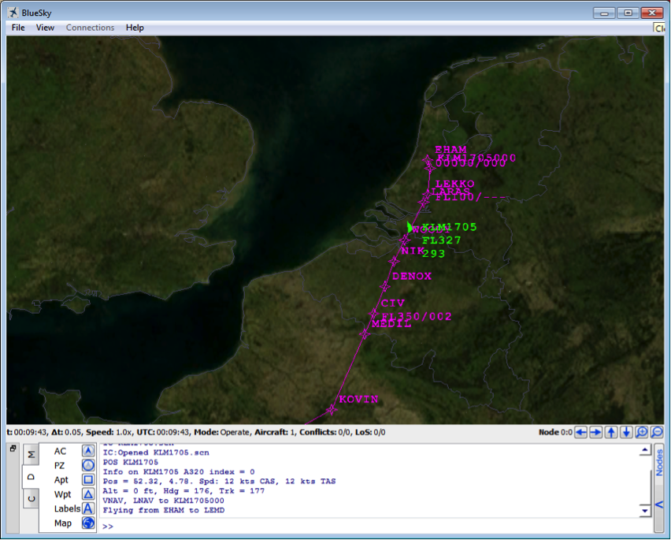

This tutorial will show you how to create an aircraft and modify its route. Start BlueSky and create an aircraft. To get info on how do this, type CRE without any arguments. This will give you the help text on the CRE (create) command, showing:
CRE acid, type, lat, lon, hdg, alt, spdUsing this syntax, we can define an aircraft in the following way:
CRE KL204, B744,52,4,180,2000,220This creates a Boeing 747-400 with call sign KL204 at position lat,lon = N52, E4, flying south (180) at 2000 ft with a (calibrated) airspeed of 220 kts. One comma or spaces separate the different arguments for all commands. With existing aircraft it is possible to click on an aircraft and then enter the command without the aircraft id.
Now let’s tell this level-flying plane to climb up to FL100 with a speed of 250 kts.
KL204 ALT FL100
KL204 SPD 250Use the PAN or +++ command (or mouse/touch controls) to set-up the display. PAN KL204 will put this aircraft in the center of the display. Freeze the simulation by entering:
HOLDNow we’re ready to start entering a route into the Flight Management System of this aircraft.
First we enter the destination using the ICAO identifier of the airport: (France, Paris de Gaulle):
KL204 DEST LFPGIf we would start the simulation now with the OP command, the aircraft would start flying to the destination using the great circle, i.e. the shortest route. Optionally we can also enter the origin, let’s use Amsterdam:
KL204 ORIG EHAM
KL204 ORIG EHAM RW06
KL204 ORIG EHAM/RW06By double clicking on an aircraft (or entering its call sign or a POS command with the call sign) we see its route being displayed. Currently only one route is displayed at the time.
Now we can start entering actual waypoints, the syntax is:
ADDWPT acid, wpname/position, [alt] , [spd] , [afterwp]The aircraft id and command can be in reversed order (as with all commands as long as the aircraft exists, so not for CRE) and the altitude (feet or FL) and speed (CAS or Mach number) are optional. When only a speed constraint is entered sue two commas between waypoint and speed.
The speed is the speed for the leg towards this waypoint. The altitude will be reached as soon as other altitude constraints allow it for climbs and as late as possible for descents( standard Top of Climb and Top of Descent logic).
For the waypoint name also a lat/lon can be entered, e.g. by clicking on the display. For lat/lon it is also possible to type degrees’minutes’seconds’ like this: 52’16’13,004’15’40 (latitude: North is positive, longitude: East is positive).
Also runways can be used as waypoint, in similar fashion like lat,lon as two arguments:
CRE KL204, B744, EHAM, RW06,*,100,200Here the runway heading will be entered as heading because of the use of the wildcard ( * ) as heading.
Some example statements of how to do this are given below:
KL204 ADDWPT NV
KL204 ADDWPT WOODY,FL100,250
Kl204 ADDWPT 51’50’15,003’55’00
KL204 ADDWPT CMB,,0.80
KL204 ADDWPT NEA FL370By default, waypoints are added at the end of the route (but before the destination). You can use the AFTER command to insert a waypoint after a waypoint in the route:
KL204 AFTER CMB ADDWPT CIVThe after waypoint can also be used as the final argument in the addwpt command, so after the speed constraint:
KL204 ADDWPT CIV , , , CMBThe AT command allows viewing, editing or removing speed or altitude constraints
KL204 AT NEA
KL204 AT CMB SPD M74
KL204 AT NEA DEL ALT
KL204 AT WOODY FL070/250
KL204 AT NEA ----/----
KL204 AT WOODY FL070/----
KL204 DELWPT CIV
During the flight it is possible to control which waypoint should be active (i.e. flown to) with the direct command:
KL204 DIRECT CMB
KL204 DIRECT KL2040001A lat/lon waypoint will be given a waypoint-name using the call sign of the aircraft followed by sequence number with leading zeros, e.g. KL204001. This name can then be used as reference in the AT, AFTER, DELWPT or last argument of the ADDWPT command. The complete route can be deleted with DELRTE KL204.
For any of the commands, clicking with the mouse on the displayed route will select the route waypoint as well when it is appropriate to enter a waypoint name on the command line.
To make sure that the aircraft follows the route, the autopilot should be hooked up to the FMS. For heading, this is done by switching the LNAV (lateral navigation) mode on, for speed and altitude (if specified) this is done by switching VNAV (vertical navigation) mode on. VNAV can only be active when LNAV is on as well, so switch LNAV on first:
KL204 LNAV ON
KL204 VNAV ONAs soon as an altitude (KL204 ALT FL380) or speed command (KL204 SPD 250) is given, the VNAV mode is switched off again, and the ALT SEL or SPD SEL mode is activated, while the other vertical parameter will go to SPD/ALT HOLD. KL204 VNAV OFF also switches VNAV off, the aircraft continues in ALT-holf and SPEED-HOLD.
Similarly, LNAV OFF disengages the LNAV mode, switching to HDG-HOLD, while a heading command (KL204 HDG 90) changes the lateral mode to HDG SEL (heading select).
The DEST and ADDWPT command switch the LNAV (and if possible the VNAV mode) on as well, to result in expected behaviour for users who are not setting autopilot modes themselves.
When the route pas been entered, running in FastFoward mode (the FF command) will show the aircraft flying the route in fast-time.
OP
FFAll traffic, including the routes can be saved as a scenario file, by saving the current situation as an initial condition (IC) with the SAVEIC command:
SAVEIC myfirst.scnWhen restarting BlueSky this scenario-file can be loaded by the IC-command:
IC myfirstTo see what’s in a file, simply open it in a text editor, like Notepad. It is a plain text file containing the same commands as the user can enter, but with a time stamp (HH:MM:SS.hh) in front of the line followed by a carrot sign (“>”):
00:00:00.00>CRE KL204,B744,52.304532,3.99792,191.4,10000.0,250.0
00:00:00.00>DEST KL204,LFPG
Etc.Editing this file, or generating it with your own tools, is also a way to simulate traffic with BlueSky. The timestamp is the time, relative to the start of the scenario, in ascending order. The next line will be processed when the runtime (simulated runtime) has reached this value.